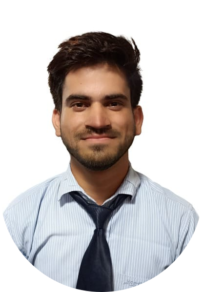

Cloud Platforms
Cloud infrastructure and platform services.
Microsoft AzureAWS (Foundational)
NAMASTE, I'M
DevOps & Cloud Infrastructure Engineer
I’m a DevOps and Cloud Infrastructure Engineer with 1.5+ years of hands-on experience provisioning Microsoft Azure infrastructure with Terraform and automating deployments through Azure DevOps pipelines. I focus on reusable infrastructure, controlled changes and secure delivery workflows.

I’m a DevOps and Cloud Infrastructure Engineer with 1.5+ years of hands-on experience provisioning and managing Microsoft Azure infrastructure using Terraform and automating infrastructure deployments through Azure DevOps pipelines. My work includes reusable Terraform modules, environment-specific configurations, cloud networking and DevSecOps checks.
I focus on repeatable Infrastructure as Code, Terraform state management, pipeline automation and security validation. I also have foundational knowledge of Docker, Kubernetes and AWS.
A practical toolkit for building, deploying, securing and operating cloud-native infrastructure.
Cloud infrastructure and platform services.
Repeatable infrastructure provisioning and state management.
Container packaging and Kubernetes deployments.
Automated build, validation and release workflows.
Cloud networking, compute, application and storage services.
Access control, governance and cloud security fundamentals.
Metrics, logs and application observability.
Infrastructure scanning, image scanning and code security.
Daily tools for administration, scripting and collaboration.
Core concepts used to troubleshoot connectivity and services.
Expanding into cloud-native and platform engineering practices.
Cloud and DevOps experience focused on infrastructure automation, delivery pipelines and reliable cloud environments.
Provisioned and managed Azure infrastructure across Dev, QA and Production using Terraform. Built reusable modules, worked with Azure Landing Zones and remote state management, automated plan/apply workflows through Azure DevOps, and integrated TFLint, tfsec and TruffleHog into CI pipelines.
Recognized for introducing an automation framework using Terraform, Terratest and Azure DevOps to reduce manual effort and improve deployment efficiency.
Hands-on work across Azure infrastructure, Kubernetes, CI/CD and DevSecOps. Explore the source code and implementation details.
A multi-stage pipeline that builds and pushes a Docker image to Azure Container Registry, then deploys the application to AKS using Kubernetes manifests and rollout checks.
Terraform repository organized around reusable Azure resource modules and separate pre-production and production environment folders.
Infrastructure-as-Code examples organized by Azure resources, including resource groups, virtual networks, subnets, network security groups, virtual machines and peering.
Terraform project arranged with development and production environment folders and reusable modules for Azure resource groups and virtual networks.
Python project structured around AI components, agents, job processing, data storage, notifications and scheduled workflows.
A Flask application packaged with Docker and a GitHub Actions workflow directory for automated application delivery.
Kubernetes manifests and configuration for application deployment through Ingress and Azure Application Gateway Ingress Controller.
Academic foundation and continued learning through online courses and practical certifications.
Dr. A.P.J. Abdul Kalam Technical University
CGPA: 7.2
Have an opportunity, a cloud challenge or a project to discuss? Feel free to reach out.
Send me an email ↗